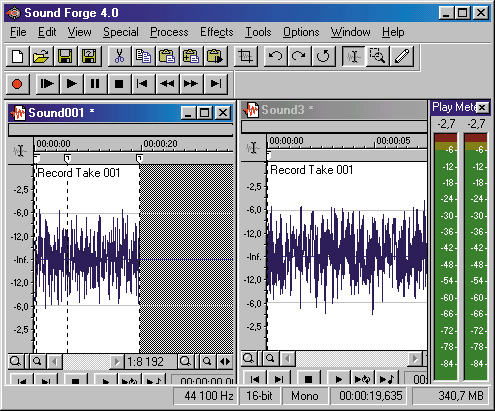
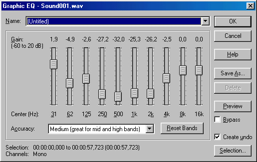
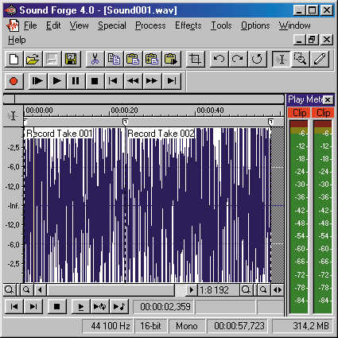
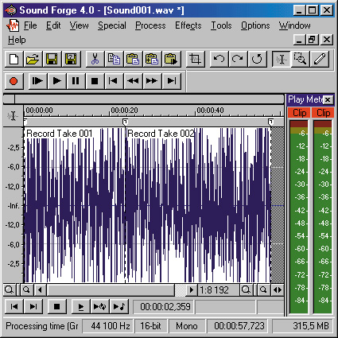

|
|
|
5.3. Маленькие хитрости
В принципе, мы уже достаточно рассказали об использовании звука на веб-страницах. Можно было бы на этом и завершить данную главу, однако хочется указать на одну очень часто встречающуюся ошибку, а именно: сплошь и рядом встречаются люди, которые сжимают файл в тот или иной формат, не подготовив его к этому. В результате на выходе получается гораздо худшее качество звучания, чем могло бы быть при той же степени сжатия.
В этом очень коротком разделе вы найдете несколько полезных советов, которые дадут вам возможность достичь лучшего качества сжатых звуковых файлов путем предварительной подготовки исходного материала.
Как правило, если звук прочитан с компакт-диска, то он уже практически готов к сжатию. А вот если он был записан с внешнего источника, то для лучшего эффекта может потребоваться некоторая коррекция.
Устранение постоянной составляющей
Первое, что может “мешать” сжатию (да и не только сжатию, а вообще любой цифровой обработке звука), — это так называемая постоянная составляющая сигнала. На рис. 5.6 вы можете видеть в левой части вол новую форму обычного синусоидального сигнала (чистого тона), записанного “правильно”, а в правой части — тот же звук с примесью постоянной составляющей. Кстати, на слух эти два звука различить нельзя 2 , так что пока мы не подвергаем звук цифровой обработке, постоянная составляющая вроде бы нам и не мешает.
Мы здесь не будем вдаваться в подробности того, как постоянная состав ляющая влияет на цифровую обработку, просто запомните, что ее лучше

Рис. 5.6. Обычный синусоидальный сигнал
и он же с постоянной составляющей удалить. Во многих программах звуковой обработки имеются соответствующие средства. Например, в программе Sound Forge можно выбрать из меню Process (Обработка) пункт DC offset (Постоянное смещение) и в открывшемся окне выбрать автоматическое удаление постоянной составляющей. Программа сама определит ее наличие и, в случае необходимости, удалит.
Управление амплитудой
Кроме того, фонограмма может иметь слишком малую амплитуду. Как .правило, с меньшими потерями сжимаются фонограммы, максимальная амплитуда которых достигает приблизительно -1 дБ. Если фонограмма слишком тиха, увеличьте ее уровень, а если он достигает 0 дБ, то лучше ero немного уменьшить. Для этого лучше всего пользоваться функцией нормализации. Например, в программе Sound Forge выберите из меню Process (Обработка) пункт Normalize (Нормализация). Установите уровень на отметку -1 дБ. Программа сама определит максимальный уровень амплитуды в записи и пересчитает в соответствии с ним все остальные уровни. Только обратите внимание, что при нормализации следует производить увеличение уровня до -1 дБ пиковой амплитуды — в Sound Forge это переключатель Peak. Если включить переключатель RMS, то все операции будут производиться со средним значением амплитуды сигнала, что для данного случая не подходит.
Но это еще не все. Описанная выше операция помогает, если уровень сигнала в записи остается практически постоянным. Однако бывают случаи, когда при наличии нескольких пиков на уровне около 0 дБ уровень всей остальной записи не поднимается, например, выше -30 дБ. В этом случае для получения лучшего звучания при сжатии необходимо уменьшить динамический диапазон записи. Для этого в Sound Forge существует функция Dynamics (Динамический диапазон). В других программах она может называться как-нибудь вроде Compressor/Expander/Limiter. В программе Sound Forge из меню Effects (Эффекты) выберите пункт Dynamics (Динамический диапазон) и далее — Graphic (Графическое представление). В открывшемся окне в большинстве случаев можно просто выбрать один из предварительно заданных наборов настроек. Нажав на кнопку Preview (Предварительное прослушивание), можно проверить результат.
Обратите также внимание на ползунковые регуляторы Threshold (Порог) и Ratio (Степень). Первый определяет порог уровня сигнала, ниже которого начинает действовать компенсация — соответствующее усиление сигнала. Регулятор Ratio определяет степень этой компенсации.
Нейтрализация шумов
Следующим мешающим моментом при сжатии могут быть шумы, присутствующие в записи. Для удаления шумов в звуковых программах также есть специальные средства. Например, в программе Sound Forge в меню Tools (Сервис) имеется пункт Noise Reduction (Шумоподавление). Однако здесь не все так просто. Конечно, “шумливая” запись после сжатия слушается не лучшим образом. Однако если шумов в записи много и они широкополосные, то их следует фильтровать очень осторожно. Дело в том, что при сильном понижении уровня широкополосного шума в самой фонограмме появляются спектральные провалы, часто слышимые как “присвист”, не говоря уже об изменении тембра полезного сигнала (инструментов, голоса и т.,п.). Если такую испорченную шумоподавлением фонограмму сжать в формате RealAudio или MPEG 1 Layer 3, то эффект спектральных провалов усилится, “присвисты” или другие артефакты будут гораздо слышнее, чем в несжатом звуке. При сжатии в формате TwinVQ этот эффект не так заметен, но все же присутствует.
Поэтому при шумоподавлении не стоит снижать уровень шумов более, чем на 15 дБ. В отдельных случаях (очень плохие записи, смешанные практически с белым шумом) приходится вообще отказаться от шумоподавления. Можно, конечно, произвести предварительную реставрацию специальными профессиональными средствами, но они, как правило, недоступны обычному пользователю ПК.
Устранение выделяющейся спектральной полосы
И, наконец, еще один момент. Если в записи присутствует сильно выделяющаяся спектральная полоса (это можно заметить визуально на так



Рис. 5.7. Две спектрограммы: обычной, звукозаписи и звукозаписи с сильно- выделяющейся частотной полосой
называемой спектрограмме или сонограмме). На рис. 5.7 показаны две спектрограммы звука — для обычной записи и для записи с сильной спек тральной полосой. Если такая выделяющаяся полоса присутствует, то лучше ее перед сжатием “сравнять” с остальными. Обычно это удается сделать с помощью графического эквалайзера. В программе Sound Forge выберите из меню Process (Обработка) пункт EQ (Эквалайзер) и далее — Graphic (Графический). Открывшееся окно очень похоже по виду на обычный графический эквалайзер, с помощью которого останется только уменьшить уровень выделяющейся частотной полосы.
Вообще говоря, при наличии соответствующего навыка можно, применяя графический эквалайзер перед началом сжатия подкорректировать любой звуковой файл так, чтобы после сжатия потеря качества была наименее заметна. Но, к сожалению, здесь нельзя дать каких-либо точных инструкций. Если вы заинтересовались этим вопросом, поэкспериментируйте с различными записями, и через некоторое время уже до сжатия сможете определить по звучанию, качественно ли сожмется этот файл. Если же у вас нет на это времени, то просто следуйте советам, данным выше. Это поможет избежать значительной потери качества при сжатии звуковых фрагментов, и в результате посетители вашей веб-страницы останутся довольны.
|
|
|